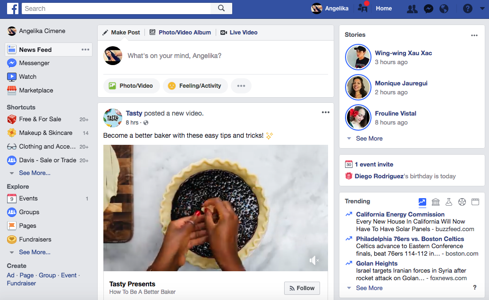
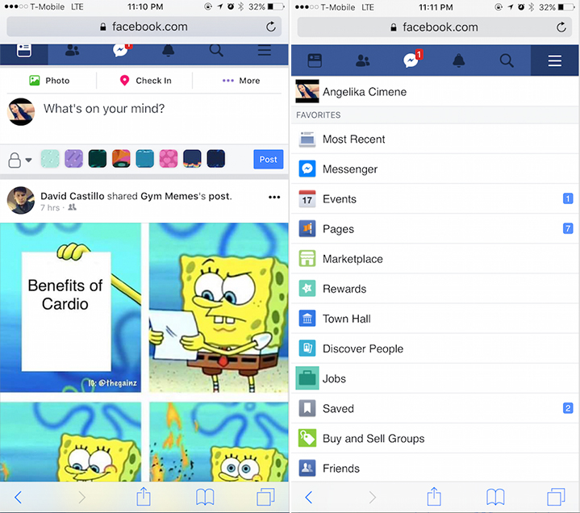
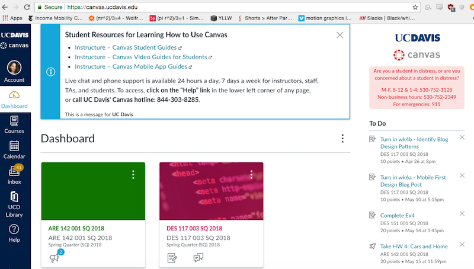
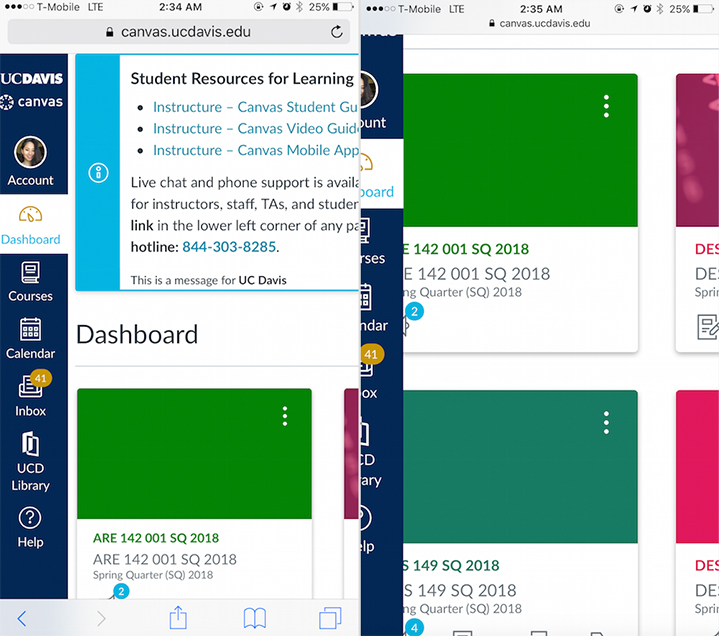

Mobile First Design
The article, “The Importance of Designing for Mobile First”, discusses about how designing for a mobile device is a key to creating an efficient, successful, and functional website. It is a great strategy to design for mobile due to its smaller screen. Since the designer has to work with a smaller screen, it will give the designer the ability to put the main and important parts of the website rather than a bunch of nonsense. With this technique of designing for mobile first, it helps create a faster loading website in the desktop because of the adjustments. One key concept in the article is how browsing the internet and searching the web is increasing in mobile devices. It provides a line chart that analyzes the decline of web browsing in the desktop and the increase of web browsing in the mobile device. With this piece of information, it indicates that designing for mobile is a key aspect to creating a successful website that can be easily reached through multiple devices without a problem.
The great example of a mobile device vs a desktop design is Facebook. Facebook has successfully executed the design for mobile technique in their website. The desktop design in Facebook definitely has a lot more detail than the mobile device. The layout is similar and not too different so people are able to use both without a problem. In the desktop version, there are three columns. On the left column, it is a navigation tool. These are links on which part of Facebook a person would like to go to. For example, if they want to look at their messages, they would click the Messages link. On the middle column, it is where most of the content lies. It is the part where people are able to share content with each other. A person can put their thoughts and look at what people have been sharing. In the right column of the website is where most of the junk lies. The right column is filled with ads, friend requests and invites, and trending news (that people don’t really read or is fake). It is the least important part and aspect of facebook.
In the mobile version of facebook, it is minimalized into one column that can fit a small screen. All the functionalities and important aspects, such as the navigation tool and the content is all still there, but is hidden. In the desktop version, the navigation system is in the left column, but in the mobile device, it’s hidden in a small button on the right. Once it is clicked, the content is then replaced with the navigation tool that is similar to the one you see in on the desktop. The content can still be easily accessible without confusion because the mobile uses similar icons that is in the desktop. One of the key differences in the desktop and and the mobile versions is the ad placement. In the desktop, the ads are in the side and can be ignored, but in the mobile version, it’s placed in the middle, same with the content. This is one of the annoyances in the mobile device version because there is not enough space to place the ads somewhere else, so it’s place in the content. It makes the mobile users look through more ads, and have more temptation to click on them, rather than the desktop version.
 An example of a terribly designed mobile version in comparison to the desktop is Canvas. The canvas website also has the navigation tool in the side of the screen. In the desktop version, it is completely functionable. It’s simple to understand based on the layout and the core elements. There is a dashboard of all the classes you are taking for the quarter and have a HW assignment to do list in the side. This website design is functionable because everything is all you need in one screen. It is easily navigable, especially with the navigation tool on the side that doesn’t go away. The mobile version on the other hand is completely disappointing in comparison to the desktop. The layout is completely the same. It seems like the desktop version was just slapped on as the website version without fixing or touching up the website. Even though this design is perfect for the desktop, it is not efficient in a small screen.
To get through the website, I have to zoom in-or zoom out to read the contents properly. When you zoom-in the content, the navigation tool begins to be cut off to the side. There is a lot of zooming in and zooming out, and a lot of moving your fingers left or right to see the whole page and contents. Another issue with this is that due to the lack of simplicity, it takes a long time to load on a mobile phone. It takes at least 30 seconds to a minute to load, while in the desktop will take less than that. This was clearly designed in the web first and the mobile device as an afterthought. With this experience, it definitely makes me use canvas less on the mobile device.
 